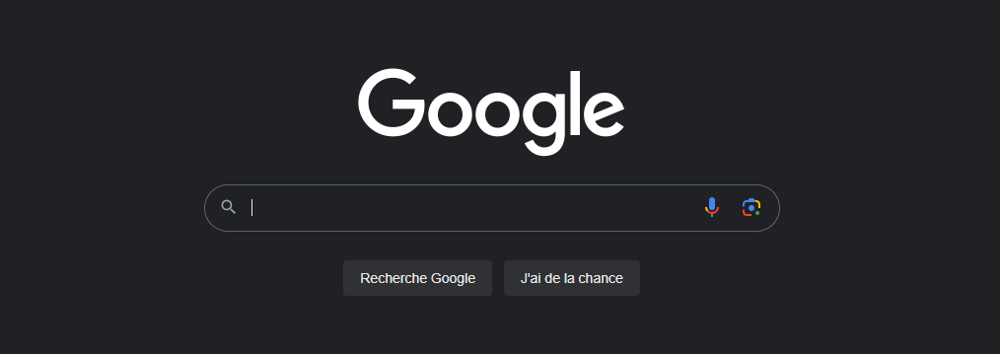
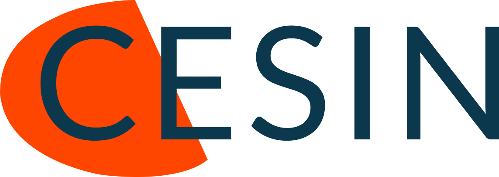
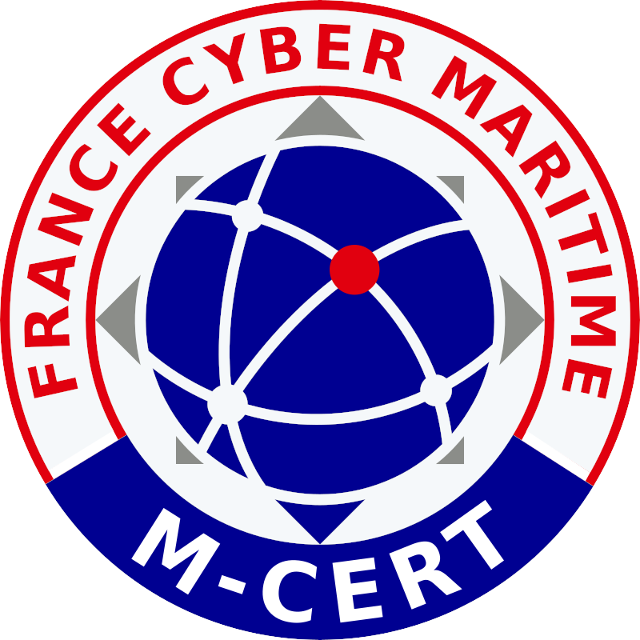

La veille technologique est une composante essentielle de la veille stratégique.
Elle consiste à rester à l'affût des avancées techniques et des
innovations dans un secteur d'activité donné.
La veille technologique englobe diverses activités telles que la surveillance, la collecte,
le partage et la diffusion d'informations permettant d'anticiper ou de se tenir informé
des changements en
matière de recherche, de développement, de brevets, de lancement de nouveaux produits, de matériaux,
de processus, de concepts et d'innovations de fabrication, entre autres.
L'objectif de la veille technologique est d'évaluer l'impact de ces évolutions sur l'environnement et
l'organisation. En surveillant de près les avancées technologiques, une entreprise peut se positionner
de manière proactive, anticiper les tendances du marché, identifier de nouvelles opportunités, améliorer
ses processus et prendre des décisions éclairées.
La veille technologique permet également de détecter les menaces potentielles,
telles que la concurrence accrue ou l'obsolescence des technologies utilisées,
et de prendre les mesures nécessaires pour rester compétitif. En résumé, la veille technologique
est un outil précieux pour maintenir une position avantageuse sur le marché et favoriser l'innovation
au sein d'une organisation.
De nos jours, les cyberattaques font parties de notre quotidien. Les mots “ransomware” (rançongiciel), “phishing” (hameçonnage) ou encore “virus” sont petit à petit devenus des mots de vocabulaire courants. En plus de ces attaques, les matériels, outils, et autres objets connectés tels que les téléphone portables, les ordinateurs, les tablettes, les imprimantes, etc. que nous utilisons au quotidien tant professionnellement que personnellement, peuvent présenter des vulnérabilités. Une fois ces vulnérabilités découvertes et dévoilées, il ne faut pas beaucoup de temps pour qu’elles soient exploitées à des fins malveillantes.
Afin de garantir la pérennité d’une entreprise, il est important de pouvoir corriger au plus vite les failles découvertes. Il est donc important de se tenir au courant de ces menaces et failles existantes et découvertes. Ainsi, l’infrastructure en place ainsi que les données de l’entreprise pourront être sécurisées au mieux.
La technologie évolue très vite, tout comme l’ingéniosité des attaquants. Il est donc intéressant d’avoir plusieurs sources d’informations afin d’augmenter les chances de voir les alertes critiques le plus vite possible.
Voici une liste de sources consultables pour se sensibiliser/protéger des cyber-attaques.
|
Le site de l’ANSSI (Agence Nationale de la Sécurité des Systèmes d’Information) est une source d’informations aussi bien pour les entreprises, les administrations que pour les particuliers. L’ANSSI est un service à compétence nationale. Elle est rattachée au Secrétaire Général de la Défense et de la Sécurité Nationale (SGDSN), autorité qui assiste le Premier Ministre dans l'exercice de ses responsabilités en matière de défense et de sécurité nationale.
On y trouve, entre autres, les dernières actualités concernant la cybersécurité, des conseils sur la cybersécurité en général mais aussi un grand nombre de guides de bonnes pratiques sur des thèmes variés (Applications Web, Cryptographie, Externalisation, Méthodologie, Systèmes industriels, Technologies sans contact, etc.). |

|

|
Le site de la CNIL (Commission Nationale de l’Information et des Libertés) est aussi une source importante d’informations.
La CNIL a pour mission principale d’informer et de protéger les droits des personnes. Mais son champ d’action ne s’arrête pas là. Elle a en effet plusieurs missions : informer, protéger les droits, accompagner la conformité/conseiller, anticiper et innover, contrôler et sanctionner. C’est notamment vers la CNIL que les entreprises et particuliers doivent se tourner pour le signalement d’attaques par exemple. |
|  | Le CESIN (Club des Experts de la Sécurité de l’Information et du Numérique) a pour but de favoriser les échanges entre experts et pouvoirs publics afin d'accompagner les évolutions réglementaires, mais aussi de donner au RSSI tous les outils nécessaires à l'accomplissement de sa mission. Son rôle est également de participer à toute démarche nationale et internationale ayant pour objet la promotion de la sécurité de l'information et du numérique, mais aussi de rédiger des guides, livres blancs, etc., ainsi que de sensibiliser les usagers et décideurs aux enjeux de la sécurité des Systèmes d’Information. |
|
Le CERT-FR (Centre gouvernemental de veille, d’alerte et de réponse aux attaques informatiques) est une des composantes curatives complémentaires des actions préventives assurées par l’ANSSI. En tant que CERT national, il est le point de contact international privilégié pour tout incident de nature cyber touchant la France. Il assure une permanence de ses activités 24h/24, 7j/7.
Son rôle est de détecter les vulnérabilités des systèmes, au travers notamment d’une veille technologique, d’aider à la mise en place de moyens permettant de se prémunir contre de futurs incidents, de piloter la résolution des incidents, si besoin avec le réseau mondial des CERT, mais aussi d’organiser la mise en place d’un réseau de confiance. Leurs bulletins d’alertes sont disponibles sur leur site. Pour les secteurs de industrie, du service et du tertiaire, ce sont les bulletin du CERT-IST qu’il faut consulter. |
 |